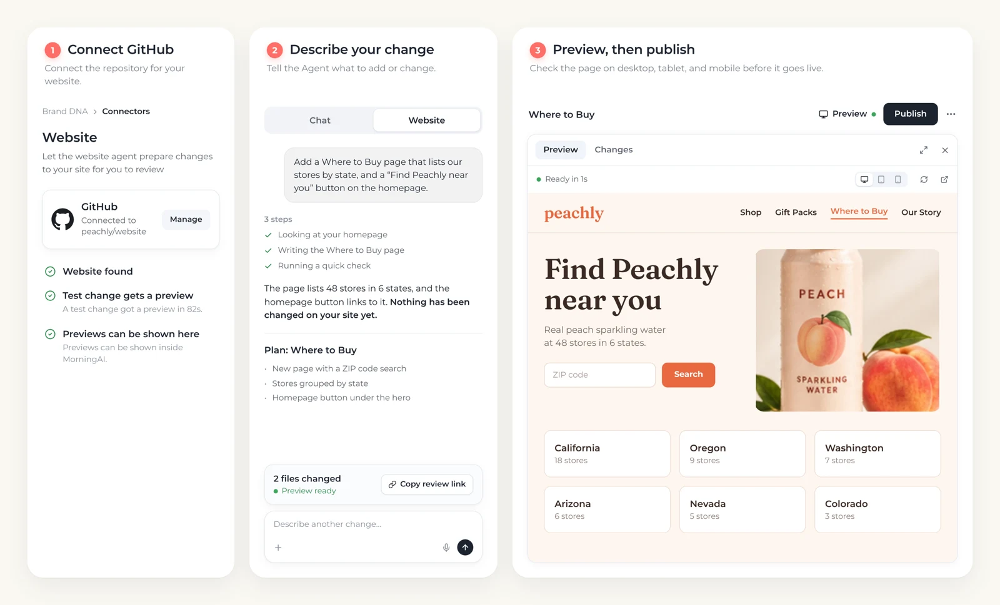
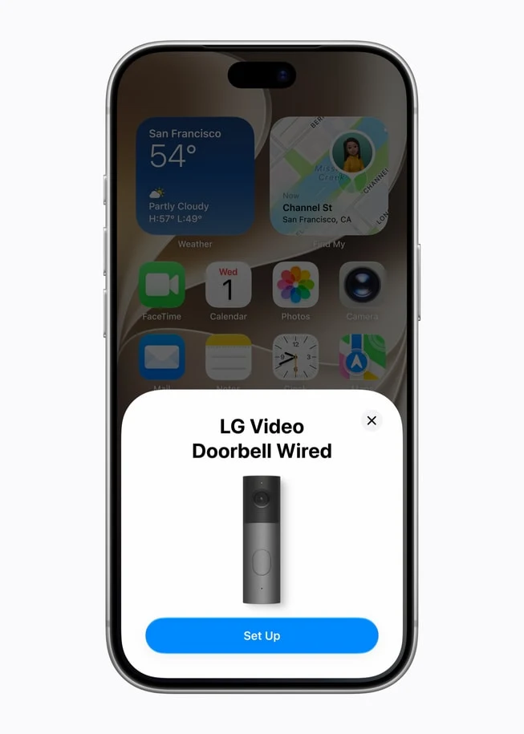
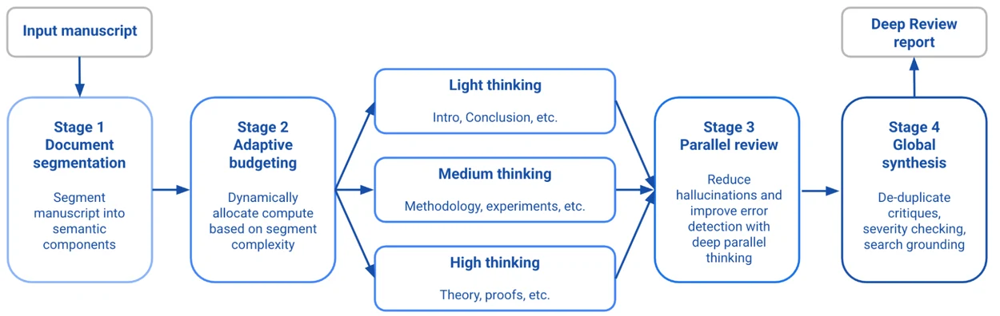
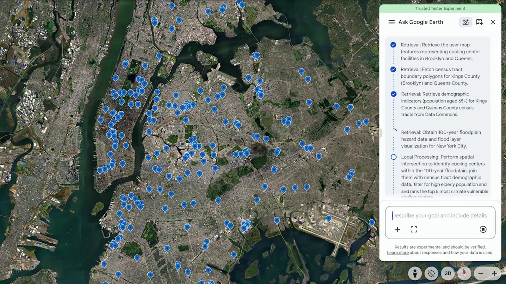
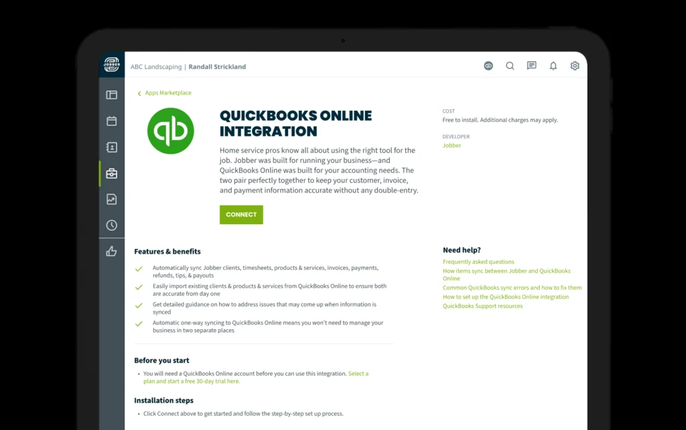
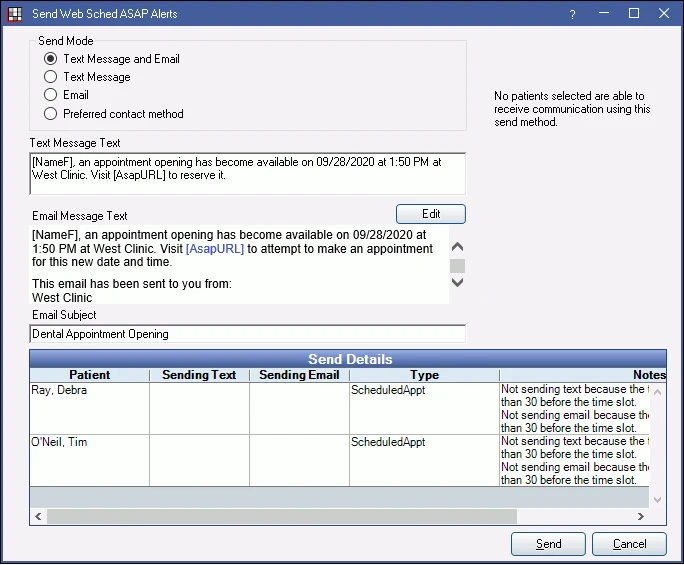

AI WEEKLY · 周报试刊 / PILOT · REVISED EDITION
From product screens to real operational work
7 product & developer signals · 4 industry workflow opportunities
News window: October 12–14, 20:10 Toronto. A Wednesday-cutoff pilot, not a full week.
01 / How the products actually work
MorningAI: GitHub → edit → preview → publishGemini: Chat / Task, background work and codeApple: people, shared screens and locksAgentScope, TIPER, Deep Review, Earth AI
02 / Vertical ops glue
Receipts: resolve the missing job numberMonth-end: ownership and verified resolutionHVAC: feasible candidates for dispatchersDental: a $20 native feature changes the pitch
Revision checked October 15, 2026 UTC. Prices are live checks; industry opportunities are background research.
AI WEEKLY · Partial-week pilot01 / 24
产品操作 / PRODUCT WORKFLOW · H01
MorningAI: run a promotion from site edits to scheduling and results

Official demo / MorningAIThe actual workflow
Connect GitHub in Brand DNA → Connectors, then switch Agentsfrom Chat to Website. The agent reads the site, makes a planand builds the requested change. Its example adds astore-locator page grouped by state and a homepage button.Editable elements include copy, images, layout and links; userscan supply photos or documents. Preview offers desktop, tabletand phone views, with a review link for an engineer. Publish isthe explicit go-live action.
Entry, price & availability
Entry: app.morningai.com. Website editing requires a GitHubconnection. The October 12 announcement invites users to try itbut gives no feature-specific plan, price or quota.
S0102 / 24
产品拆解 / PRODUCT DETAIL · H01
MorningAI: capabilities, cost and practical use
Beyond generating captions
A second workflow starts with last week’s successful posts, thengenerates captions and images for LinkedIn, Instagram and Facebookwith platform previews. Users adjust time, image and copy beforeapproving the schedule. Related posts sit inside a campaign that canbe renamed or recoloured; Calendar opens filtered to it. An Agentsidebar on Calendar supports further edits without returning to themain chat.
Results return to the same workspace
Channels Overview aligns social, Klaviyo email, Google Analytics andSearch Console metrics to one date range. Clicking a metric opensdaily detail and associated posts; email includes Campaigns/Flows,while web includes pages, searches and sources. Unlike copyingchat-generated text into a separate scheduler, campaign objects andapproval state remain in the workspace. The practical value for asmall team is fewer handoffs among content, site, calendar andreporting; no time-saving percentage has been measured here.

Official interface · MorningAI

Official interface · MorningAI
S0103 / 24
产品操作 / PRODUCT WORKFLOW · H02
Gemini Argon puts chat, background tasks, and coding within one app
 Official demo / Gemini 4 Argon
Official demo / Gemini 4 ArgonTurn a conversation into ongoing work
Open the main chat window in the Gemini app and switch fromChat to Tasks. Give it a task involving connected apps. Googlenames grocery ordering, table booking, design, andbusiness-building, with examples including Instacart, OpenTable, Adobe, and Shopify. Work can continue while the user is awayfrom the computer, with more frequent progress reportingduring longer tasks.
Entry, price & availability
The app rollout began October 13 for Google AI Pro and Ultrasubscribers; the embedded Antigravity surface is specifically in themacOS app. Developer access is through the paid API, with Ultraaccess identified for AI Studio and Antigravity. Neitherannouncement gives subscription amounts, token prices, quotas,or a complete country/language list.
S02 · S0304 / 24
产品拆解 / PRODUCT DETAIL · H02
Gemini 4 Argon: capabilities, cost and practical use
Move into coding on a Mac
Use the newly embedded Antigravity agentic coding interface insidethe Gemini macOS app to move between chat and coding.
Developer entry points
Paid Gemini API access starts in Google AI Studio or Android Studio;Google AI Ultra subscribers can also try the model in AI Studio andGoogle Antigravity. The announcement links to the Argon DeveloperGuide, Antigravity instructions, an Android Studio walkthrough, androbotics examples.
Why the interaction matters
For consumers, the concrete value is connecting a goal such asdinner planning, grocery ordering, or design to the relevant serviceand letting the task continue while they are away. For developers,discussion, code changes, and longer migrations gain more closelyconnected entry points. The announcements provide no measuredtime savings or task-completion results.
S02 · S0305 / 24
产品操作 / PRODUCT WORKFLOW · H03
Apple’s home lineup links the shared screen, doorbell and lock
 Official demo / Apple HomeView + Home Collection
Official demo / Apple HomeView + Home CollectionApproach to reveal a personal view
Set up the device and multiple users with a compatible iPhoneor iPad running the latest software. From across the room thescreen presents simpler information; approaching adds detail,while face recognition selects that user’s Home Screen, apps,and widgets. Personal content such as Messages and Calendaradditionally requires the paired iPhone or iPad to be presentand recently unlocked.
Entry, price & availability
None had shipped by the cutoff: HomeView is announced forNovember 13 and accessories from December. Video AI needscompatible devices/hubs and eligible iCloud+; recording capacity isnot the AI quota. Prices retain their UK GBP and Canadian CAD basis, not a global price.
S04 · S0506 / 24
产品拆解 / PRODUCT DETAIL · H03
Apple HomeView + Home Collection: capabilities, cost and practical use
Kitchen tasks and home controls
Speak to Siri AI or use touch. Web recipes can be converted intostep-by-step instructions, with voice-operated timers and ingredienttracking while cooking. Reply to messages by voice or the onscreenkeyboard; Center Stage reframes FaceTime calls as participants movearound. A Siri conversation started on HomeView can sync throughiCloud and continue in the Siri app on iPhone, iPad, Mac, Apple Watch, or Vision Pro. Use the Home Modular face for favorite accessories orthe Home Camera face for up to nine simultaneous live camera feeds.Use touch or Siri to adjust thermostats, lights, locks, and blinds.Compatible cameras and a supported iCloud+ plan add eventrecognition and text descriptions of recorded clips.
HomeView pricing and delivery
The UK release lists tabletop and wall-mounted models at £299 each;wall-mount accessories cost extra. Preorders opened October 13,with delivery announced for November 13. Initial markets includeCanada, the US and UK; no EU sale. Siri AI starts in English, withCanadian French later. Personal context needs an AppleIntelligence-enabled paired device; some server features have dailylimits.

Official interface · Apple HomeView + Home Collection
S04 · S0507 / 24
产品拆解 / PRODUCT DETAIL · H03
Apple HomeView + Home Collection: capabilities, cost and practical use
Start setup with a tap
Use an iPhone running the latest system software for NFC pairing. Thepublished screen shows an LG Video Doorbell Wired card with a Set Upbutton. After adding the accessory to Apple Home, control it through theHome app or Siri without installing LG/Schneider apps or creating extraaccounts. Use a compatible hub such as HomeView, HomePod, HomePodmini, or Apple TV for features that require it; camera event history alsoneeds iCloud+.
How doorbells, recordings and locks work together
When a visitor rings, HomeView/HomePod chimes and the phone receives anotification. One Home view supports seeing the visitor, switching to thepackage view, talking and unlocking. The doorbell combines a 2.5K frontcamera with a Full HD lower camera. Compatible iPhone/Watch home keyssupport UWB approach unlocking, alongside tap, PIN and a key. iCloud+keeps ten days of event history; eligible plans and AI devices add summariesand natural-language search. The indoor camera physically tilts down whenthe first household member returns, making its non-monitoring state visible.
Accessory prices and integration value
Availability begins in December, with some accessories delayed until early 2027. Canadian starting prices (CAD): wired doorbell 349.95, floodlight camera549.95, plug-in outdoor camera 399.95, plug-in indoor camera 279.95; lock 479.95; LG and Schneider thermostats 279.95 each, associated temperature/roomsensors 54.95 each. Cameras are announced for the US, Canada, and UK; locks, thermostats, and sensors for the US and Canada. Installation accessories costextra, and US Apple Retail offers paid ADT installation. Existing Works with Apple Home and Matter devices already connected different brands. The new rangeadds co-designed products with a consistent path from NFC setup to Home controls. Doorbell viewing and unlocking share a view, while event search andoccupancy-based temperature adjustment reduce manual work in video timelines and fixed schedules.
S04 · S0508 / 24
产品拆解 / PRODUCT DETAIL · H04
AgentScope Java: capabilities, cost and practical use
The failing interaction
A developer spawns two agents named researcher in one turn andconsumes thinking, text and tool events through streamEvents(). On2.0.x their source label is the same parentSession/researcher path. AUI grouping by source interleaves both tasks. The reportedworkaround bans same-name parallel dispatch in the prompt andfalls back to an unsplittable display, trading concurrency forreadability.
The correction inside the discussion
Current main already has execution identity, including sessionId,turnId and runId. The reporter subsequently confirmed it works forparallel same-name children. Consumers can group forwardedevents by execution; START/END wrappers need their sessionId andreplyId pairing separately. The 2.0.x line lacks that field. Amaintenance-line PR proposes childSessionId, preserving theinnermost identity across nested forwarding rather than overwritingit at every hop.
A second actionable integration detail
A separate discussion distinguishes compaction, which summarizesthe current request context, from memory, which persists andconsolidates information beyond the session. If the model reports nocontext window, the token trigger falls back to 160k; a smaller realwindow can overflow first. Check the adapter’s window andtriggerTokens rather than treating long-term memory as a fix foroversized requests. For product UI, task identity, version and budgetare meaningful visible state, not merely backend logs.
Entry & maturity
Java SDK/integration issue. Keep main distinct from 2.0.x. The reported130k overflow was not reproduced by the responder; a maintenance PRis not a shipped fix.
S06 · S0709 / 24
产品拆解 / PRODUCT DETAIL · H05
TIPER + agent-risk: capabilities, cost and practical use
TIPER: harder interaction without invalidating the task
TIPER evolves persistent simulated-user behaviour from interactionfailures, rejecting candidates that invalidate task facts or solvability.The authors report avg@3 reductions of 5.8–33.7 percentage pointsacross 12 GPT-5.4 settings. Its useful application is diagnosingweaknesses exposed by sparse information or different interactionpacing in support, booking or collaborative coding, rather thanturning one average score into a release decision.
agent-risk: first decide whether the old record is sufficient
The ai-agent-risk Python package accepts per-step scores, harm flags,costs and final failure status. replay_stop identifies episodes thatproceed unchanged or stop under a new threshold; continuationsbeyond the old record need saved-state reruns or bounds.certify_replay returns a harm bound. Instead of rerunning everythingfrom scratch, this approach targets branches with insufficientevidence, although a model swap can make old trajectories unusable.
Entry & maturity
TIPER’s paper is public, but its linked GitHub repository read as emptyduring this review, so runnable code is not confirmed. agent-riskdocuments Python ≥3.9, a quickstart and reproduction artifacts; we didnot install or reproduce it.
S08 · S09 · R01 · R0210 / 24
产品操作 / PRODUCT WORKFLOW · H06
Deep Review: upload a document, add context, receive a technical review

Official demo / Deep ReviewEntry and workflow
Open the Google Research portal and sign in with Google.Upload a PDF or paste text; optionally add custom context.Submit for review; results appear in the document list. Googlesays agents segment the document, allocate effort by section,verify in parallel, then synthesize and ground findings.
Entry, price & availability
Multi-file input is still forthcoming. The announcement specifiesPDF/text; the portal FAQ additionally lists Docs/Slides, without amatching visible import control in the retrieved page. Documentsare retained for up to one year.
S10 · S1111 / 24
产品拆解 / PRODUCT DETAIL · H06
Deep Review: capabilities, cost and practical use
Where it fits in the work
Google’s examples include architectural assumptions in designdocuments and mismatches between presentation charts andconclusions. Compared with asking a general chat model to read andcriticize a file, this interface gives submission, context and results astable home while the backend divides verification work. The usefuldistinction is a repeatable document-review task, without asking theauthor to design a reviewing prompt from scratch.
Price and access
Public worldwide. Live portal: two free weekly reviews using Gemini4 Argon Medium; extra runs use the user’s Gemini API key andmodel-call charges. Its 40-page estimate ranges from about $3 to $20by configuration.
S10 · S1112 / 24
产品操作 / PRODUCT WORKFLOW · H07
Earth AI: ask on a map, inspect the plan, or connect an agent

Official demo / Google · video at 00:05: cooling centres, older residents and flood zonesEntry and workflow
Apply through the official interest form; the new deep-analysispreview is not generally available. Ask a spatial question inEarth chat and inspect mapped results. Google says eachanswer exposes its analytical plan and data sources, lettingexperts check assumptions or replace datasets. For customworkflows, the API accepts CSV, GeoJSON boundaries and cloudtables, joining them with Earth AI data.
Entry, price & availability
Baseline chat documentation says queries may behuman-reviewed and instructs users not to enter confidentialinformation. API data handling must be checked separately.
S16 · R03 · R0413 / 24
产品拆解 / PRODUCT DETAIL · H07
Earth AI: capabilities, cost and practical use
Where it fits in the work
Google reports that Milken Institute screened 1,500+ candidatebuildings using its list, Solar API and census data for communityresilience hubs. Instead of manually moving facility lists, maps andcensus data between tools, this interface connects anatural-language question to mapped results. Experts can inspectthe plan and replace data before carrying a recommendation intosite-selection work.
Price and access
Limited early access; the announcement gives no price for theexpanded preview or A2A service.
Known limits of the existing chat
Existing Ask Google Earth documentation, updated October 13,describes web/English access including Canada, a 500-feature querycap, a five-minute timeout and no export of queried results. Thesedescribe the baseline chat, not separately confirmed new-previewlimits.
S16 · R03 · R0414 / 24
背景研究 / BACKGROUND RESEARCH · 2026-10-15
Opportunity feature: start with exceptions, not an empty market
All four workflows already have software. A viable wedge needs an owner, a trigger, input records and a concretedeliverable. MVPs and test prices below are editorial proposals, not demonstrated willingness to pay. Start with read-onlyCSVs and authorized historical samples, then measure review costs before adding writes.
01 / Reconciliation exceptions
Validate ownership and rechecks across clients
02 / Missing-ID receipts
Handle exceptions after native matching
03 / Constraint-aware HVAC backfill
Prove feasible candidates before revenue claims
04 / Native dental enablement
$20/month native waitlist: enable it, do not rebuild it
Background research · live terms checked 2026-10-1515 / 24
行业工作流 / INDUSTRY WORKFLOW · BACKGROUND 1
Materials receipts: handle the missing job number
Download → key amounts → locate job → ask technician → allocate costs → approve
Match exact IDs → queue unmatched, ambiguous or duplicate items → human approval → export traceable records
Buyer / user
Office managers and outsourced bookkeepers for plumbing/HVACcontractors
Trigger & inputs
A supplier invoice arrives without a reliable job match Inputs: Invoiceor receipt, purchase date, supplier, line items and job list
Minimum deliverable
One supplier, one trade, 100 authorized historical receipts, a CSV joblist and recommendations without ledger writes.
What incumbents already do
Jobber already scans and forwards invoices and matches jobnumbers on Plus or Bookkeeping. Unmatched drafts still need aperson to choose the job.
The wedge & competitive boundary
Missing-ID attribution is a documented boundary. Multi-joballocation remains a hypothesis, not a verified missing feature.
jobber-scan · jobber-price · jobber-review16 / 24
商业验证 / COMMERCIAL TEST · BACKGROUND 1
Materials receipts: handle the missing job number
Observed pricing anchor
Plus with five users: $499/month without commitment, or$399/month billed annually. This is existing spend, notwillingness to buy an add-on.
Proposed test & success threshold
Test $150 for 100 exceptions and $49–99/month only if timesavings are clear. Measure review time, misallocation andmanual intervention.
Costs & platform constraints
200 items at 30 seconds of review take 100 minutes: $41.67 atan assumed $25/hour. Verify write endpoints separately.
First-customer route
Jobber’s partner ecosystem and contractor bookkeepers. Draftapps connect up to five paying accounts; public distributionrequires review.

Official interface; not independently tested
jobber-scan · jobber-price · jobber-review17 / 24
行业工作流 / INDUSTRY WORKFLOW · BACKGROUND 2
Month-end: sell a resolved exception pack
Find records in both systems → inspect totals and tax → ask owner/support → resolve → retry
Read-only comparison → flag missing records and differences → attach evidence → assign owner → human resolution →verify again
Buyer / user
Bookkeeping firms serving multiple contractors
Trigger & inputs
A sync exception or month-end close Inputs: Field-service invoices,payments, refunds, fees and QBO records
Minimum deliverable
Start with one platform and QBO CSVs, flag missing invoices and totaldifferences. Do not change tax or reopen periods.
What incumbents already do
Jobber already provides one-way QBO sync. HCP already has SyncAlerts for tax mismatches, name collisions, closed periods andduplicate invoice numbers.
The wedge & competitive boundary
Cross-client ownership and post-resolution verification are theproduct hypothesis. Simply detecting sync errors is notdifferentiation.
jobber-sync · hcp-alerts · hcp-api · hcp-price · qbo-limits18 / 24
商业验证 / COMMERCIAL TEST · BACKGROUND 2
Month-end: sell a resolved exception pack
Observed pricing anchor
HCP API requires MAX: $329 regular monthly or $299/monthbilled annually, eight users. Include any upgrade cost.
Proposed test & success threshold
Proposed test: $149/company/month over one complete closefor three firms. Continue if review time falls 30% withouterroneous ledger changes.
Costs & platform constraints
QBO: 500 requests/minute/realm and 10/second/app/realm.Builder includes 500,000 CorePlus calls/workspace/month;excess calls are throttled.
First-customer route
HCP explicitly directs users to outside developers includingUpwork/Toptal. This establishes a service channel, not provensales.
Official interface; not independently tested
jobber-sync · hcp-alerts · hcp-api · hcp-price · qbo-limits19 / 24
行业工作流 / INDUSTRY WORKFLOW · BACKGROUND 3
HVAC gaps: three jobs a dispatcher can actually fit
Search jobs → call customers → check with technician → reschedule
Filter hard constraints → estimate detour → present three explained options → dispatcher chooses → customer confirms→ recheck slot before writing
Buyer / user
Residential HVAC dispatchers
Trigger & inputs
A non-emergency maintenance cancellation leaves a 90-minute gapInputs: Opted-in waitlist, duration, service area, technicianqualifications, parts and routes
Minimum deliverable
CSV schedule plus opted-in waitlist; recommendation cards only,without calls or automatic arrival promises.
What incumbents already do
HCP already handles booking, dispatch and routes. ServiceTitanScheduling Pro offers booking and Adaptive Capacity.
The wedge & competitive boundary
Constraint-aware backfilling is a hypothesis. This research did notestablish that incumbents lack waitlists.
hcp-booking · hcp-price · hcp-api · st-scheduling · st-capacity · jobber-zapier · make-credits20 / 24
商业验证 / COMMERCIAL TEST · BACKGROUND 3
HVAC gaps: three jobs a dispatcher can actually fit
Observed pricing anchor
HCP MAX at $329/month is an existing spend anchor. Test$99/month or a $200 diagnostic; neither is an observedtransaction.
Proposed test & success threshold
Test ten actual cancellations for acceptable candidates.Measure contribution from incremental completed jobs, notgross invoice value.
Costs & platform constraints
Add messaging, maps, platform upgrades and support. Anillustrative 100 cancellations × 10 candidates × 4 actions = 4,000 automation steps before retries.
First-customer route
Implementation partners and HCP’s community. Demonstratequalification and travel constraints; conversion is untested.
hcp-booking · hcp-price · hcp-api · st-scheduling · st-capacity · jobber-zapier · make-credits21 / 24
行业工作流 / INDUSTRY WORKFLOW · BACKGROUND 4
Dental waitlists: sell native setup and auditing first
Staff call patients individually, as described by named Norbo Dental customer testimony
Configure native ASAP → select eligible patients → stagger invitations → patient accepts → sync calendar → audit deliveryfailures and completed visits
Buyer / user
Dental front desk and operations managers
Trigger & inputs
A cancellation exposes gaps between the waitlist, messaging andscheduling Inputs: Waitlist flags, contact preferences, duration,provider and operatory settings
Minimum deliverable
Synthetic-data demo, native configuration checklist and the practice’s own funnel report, without a new clinical messaging stack.
What incumbents already do
Open Dental already provides duration filtering, staggered texts andrescheduling links; NexHealth covers provider preferences andcalendar writes.
The wedge & competitive boundary
Start with configuration, waitlist flags and delivery failures. Validateunmet cross-location rules before developing software.
od-asap · od-price · nex-waitlist · hhs-cloud22 / 24
商业验证 / COMMERCIAL TEST · BACKGROUND 4
Dental waitlists: sell native setup and auditing first
Observed pricing anchor
ASAP: $20/location/month, free with Recall. US texting:$5/month access plus $0.04/outgoing message; basesoftware/support extra.
Proposed test & success threshold
Proposed $250–500 setup/audit. Subtract newly created futuregaps before counting incremental completed appointments.
Costs & platform constraints
Where HIPAA applies, maintaining/processing ePHI generallyrequires a BAA and safeguards; encryption is not an automaticexemption.
First-customer route
NexHealth cites Norbo Dental’s operations director on 15 filledslots and $3,000 weekly revenue: vendor testimony, not anindependent audit or startup profit.

Official interface; not independently tested
od-asap · od-price · nex-waitlist · hhs-cloud23 / 24
SOURCES · 唯一参考页 / SINGLE REFERENCE PAGE
Reference links
IDs map to original sources. Click a short title to open. Vendor demo assets retain their owners’ rights; no authenticated product tests.
S01 · MorningAI Website AgentS02 · Gemini 4 Argon appS03 · Gemini 4 Argon developer accessS04 · Apple HomeViewS05 · Apple Home CollectionS06 · AgentScope event correlation issue #3525S07 · AgentScope context issue #3515S08 · TIPER researchS09 · agent-risk researchS10 · Deep Review announcementS11 · Deep Review productS15 · Research@ 2026 official roundupS16 · Earth AI experimental accessR01 · TIPER code repositoryR02 · agent-risk quickstartR03 · Geospatial reasoning demosR04 · Ask Google Earth documentationjobber-scan · Jobber Supplier invoice scanningjobber-price · Jobber pricingjobber-review · Jobber app reviewjobber-sync · Jobber QuickBooks integrationhcp-alerts · Housecall Pro QBO sync alertshcp-api · Housecall Pro API overviewhcp-price · Housecall Pro pricingqbo-limits · Intuit API limitshcp-booking · Housecall Pro online bookingst-scheduling · ServiceTitan Scheduling Prost-capacity · ServiceTitan advanced scheduling settingsjobber-zapier · Jobber Zapier integrationmake-credits · Make credit meteringod-asap · Open Dental Web Sched ASAPod-price · Open Dental feesnex-waitlist · NexHealth Waitlisthhs-cloud · HHS HIPAA cloud guidanceMethod: original-source checks; event-date precision preserved; day-only paper dates have cutoff uncertainty. Prices and entry points are live revision checks.
News cutoff 2026-10-15 00:10 UTC · Revision checks 2026-10-1524 / 24